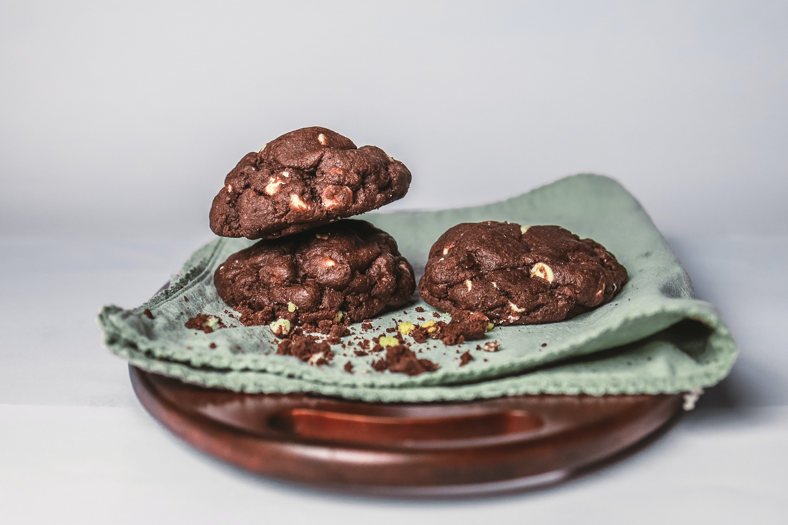

Galletas de chocolate sin gluten

Ingredientes
150 gramos de chocolate negro
125 gramos de mantequilla o margarina
3 huevos
225 gramos de azúcar
1 cucharadita de extracto de vainilla
250 g de harina (yo usé la siguiente mezcla: 125 gramos de harina de arroz y de 125 gramos de fecula de
mandioca)
30 gramos de cacao
1/2 cucharadita de polvo para hornear o levadura en polvo
Preparación
Encender el horno a 180ºC.
Derretir el chocolate en el microondas o en una cacerola con un fondo grueso o en baño maría. Agregar la mantequilla al chocolate derretido y mezclar.
Batir los huevos con el azúcar y el extracto vainilla hasta que estén espumosos. Añadir el chocolate.
Tamizar la harina con el cacao y unir poco a poco a la mezcla con el chocolate.
Cubrir una placa para horno con papel encerado y enmantecado y con una cuchara hacer montoncitos de masa con un diámetro de 2-3 cm y con separación mínima de 5 cm entre sí debido a que la mezcla tiende a expandirse durante la cocción.
Hornear en horno caliente durante 10 ó 15 minutos, hasta que cuando se toque la superficie sea consistente. Retirar del horno y dejar enfriar sobre una rejilla.